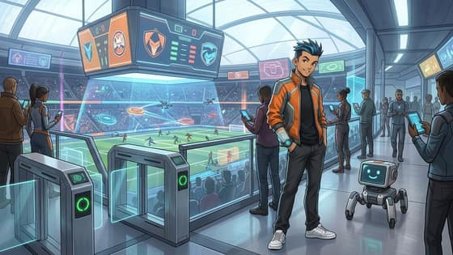
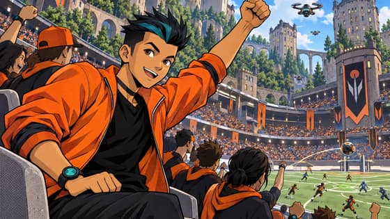
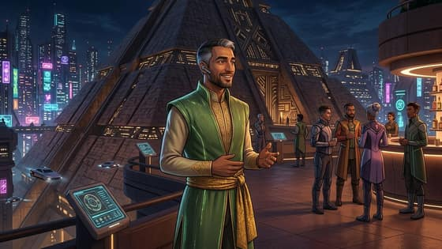
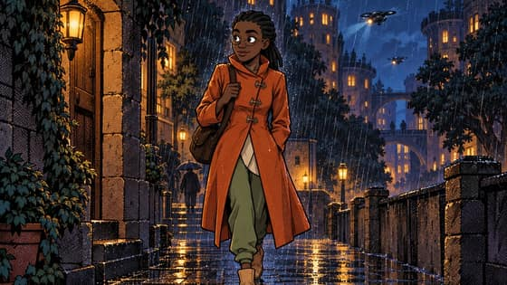
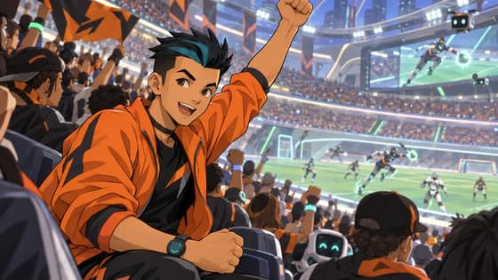
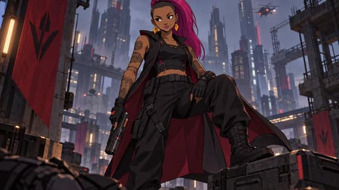
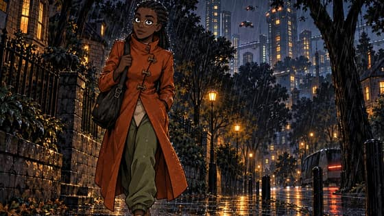
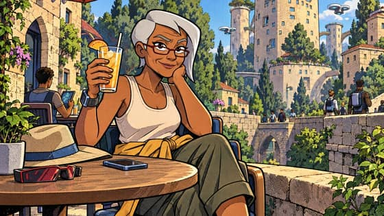
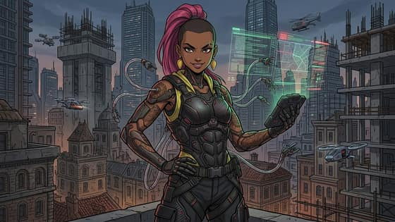
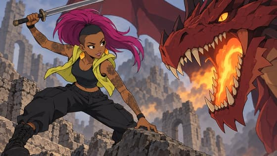

Challenge PromoDRAFT
Announcement drafts for Thursday 12 Nov (DRAFT). Entries open 00:00 PT Thursday 12 Nov and close 23:59 PT Sunday 29 Nov. No model or maker is named in the posts, and nothing implies a partnership or endorsement.
Post 1
The Snowmoon remix challenge opens Thursday 12 Nov. Pick Zei, Bai, Seila, Gladias, Deluin or Mu, say what should change, and make your own picture of them. Free to enter until Sun 29 Nov, 23:59 PT. https://snowmoon.party/challenge230 characters
Post 2
Send Mu on vacation. Put Deluin at a concert. Make Bai the villain. The Snowmoon remix challenge runs Thu 12 Nov to Sun 29 Nov (PT), and entering is free. https://snowmoon.party/challenge187 characters
Post 3
A remix challenge on snowmoon.party, an independent adaptation of Snowmoon by Vitalik Buterin (not affiliated with him). Remix the cast, share your take. Free to enter, 12 to 29 Nov (PT). https://snowmoon.party/challenge220 characters
The best starred pictures, best first
From the world-line, near-future, Gemini settings, real-prompts and re-test runs. Every picture is AI-generated; each names its model and maker, the character, the change, and the style and setting line used. Test pictures, not published. Drafted by the coding agent (Claude, a closed model by Anthropic). DRAFT until the owner approves it.

docs/starting-sheet-drafts/gemini-settings-2026-11-09/ledger.json, row 9sha256 5298fe776fac81854380dbbf80d4007ebfa40cf3bffca39a6e550c618888f737docs/starting-sheet-drafts/near-future-2026-11-09/ledger.json, row 15sha256 7c02cbd73516299606932ef5ba389180fc76317cc8372c01b28b347e99583137
docs/starting-sheet-drafts/book-world-2026-11-09/ledger.json, row 9sha256 d16ca05b26c210b50bc34ae3f16268cbe265732194828e833dceedf85a3387bddocs/starting-sheet-drafts/near-future-2026-11-09/ledger.json, row 20sha256 ca3273ab03b01f3b7ff6506d081d575bd5df79c71e750f0c564f83f8887b3c31
docs/starting-sheet-drafts/gemini-settings-2026-11-09/ledger.json, row 6sha256 e8e906a9a73697efdc4bec74b34506d92c68185f0825d466901073daca674e68
docs/starting-sheet-drafts/book-world-2026-11-09/ledger.json, row 7sha256 0e500ede7ff6ddddf1fb7cb52645bf25e7b8ce398600a087d388f3ef0665d6f7docs/starting-sheet-drafts/near-future-2026-11-09/ledger.json, row 23sha256 19037febd30d3158cc93e566d230ff0cf951669ecd44e511dee73101fb086cad
docs/starting-sheet-drafts/near-future-2026-11-09/ledger.json, row 18sha256 c575afd090425c6e550f6d907e40e80e6e8ded5197f9735972225ad0ef11a0f2
docs/starting-sheet-drafts/gemini-settings-2026-11-09/ledger.json, row 7sha256 84f21ccd3d553420d3dea4b50b7ebe3fdf4dcc3eb1728d107fdc7503ec81ab01
docs/starting-sheet-drafts/book-world-2026-11-09/ledger.json, row 10sha256 d4b0e32675c4467845d436f5ab3c275f9826b53563d0b2863aaecb008c439a35
docs/starting-sheet-drafts/near-future-2026-11-09/ledger.json, row 13sha256 0b746780b35ab0a03fafe56a6a11b645ef0bf09f54fedfcd0dd5d014b9166feb
docs/starting-sheet-drafts/near-future-2026-11-09/ledger.json, row 17sha256 826f6730532afc6e9d71ad57de23720ca4045efd6de0747fe7bb7b2db905e667
docs/starting-sheet-drafts/near-future-2026-11-09/ledger.json, row 19sha256 da494d7f9f58abdeebe8407106393c401762b6687e40e744c0d4161bdefe9661
docs/starting-sheet-drafts/book-world-2026-11-09/ledger.json, row 12sha256 f4f27a2874eced1731f4f98dbb07b10ef9efa37f2365397ec9e122f2026bcbdf
docs/starting-sheet-drafts/book-world-2026-11-09/ledger.json, row 8sha256 d590572037233ad8a48e7c190c58f575919d3bb09cb9774c7d3889c09fc740d4
docs/starting-sheet-drafts/gemini-settings-2026-11-09/ledger.json, row 8sha256 d9bc43bdd088ac189078421a03e3015c274ce36b8da73a2fc42381b192678a73
docs/starting-sheet-drafts/real-prompts-2026-11-09/ledger.json, row 30sha256 7793a76b7e5f0d1e588cc2ef5b6d5a8b21018874f2c9e97226562c862f22c5e9
docs/starting-sheet-drafts/real-prompts-2026-11-09/ledger.json, row 44sha256 75182365aed6177f29d6962aab36c0c566fa6eadd9163e54b3c9f4fba1a87e14
docs/starting-sheet-drafts/retest-2026-11-09/ledger.json, row 16sha256 ef85674a04ec2d2b1a40b6ee1c4b8644a318dbf50e50526a618e82df79dd2b60